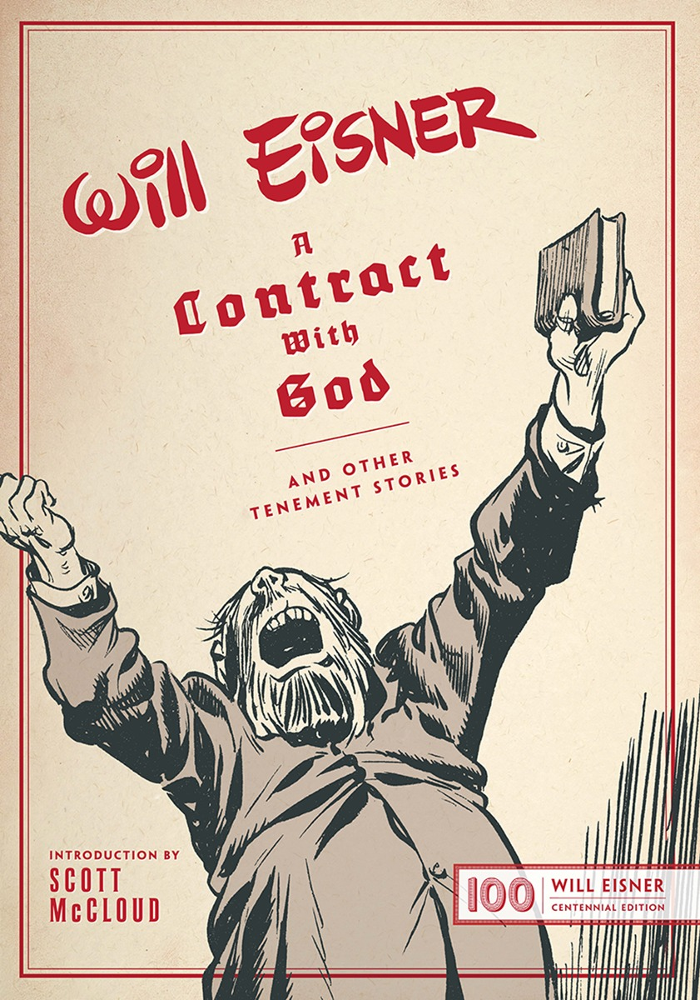
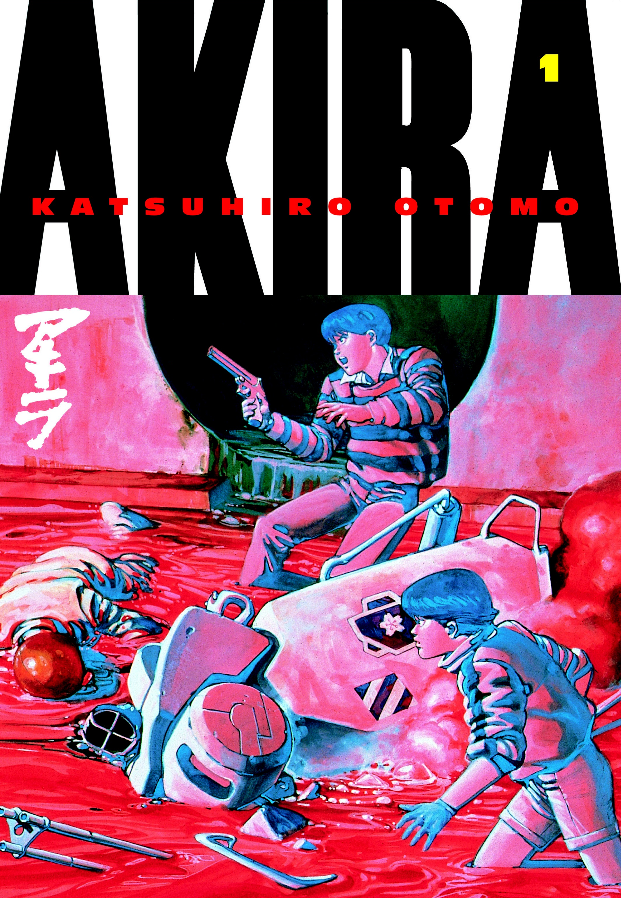
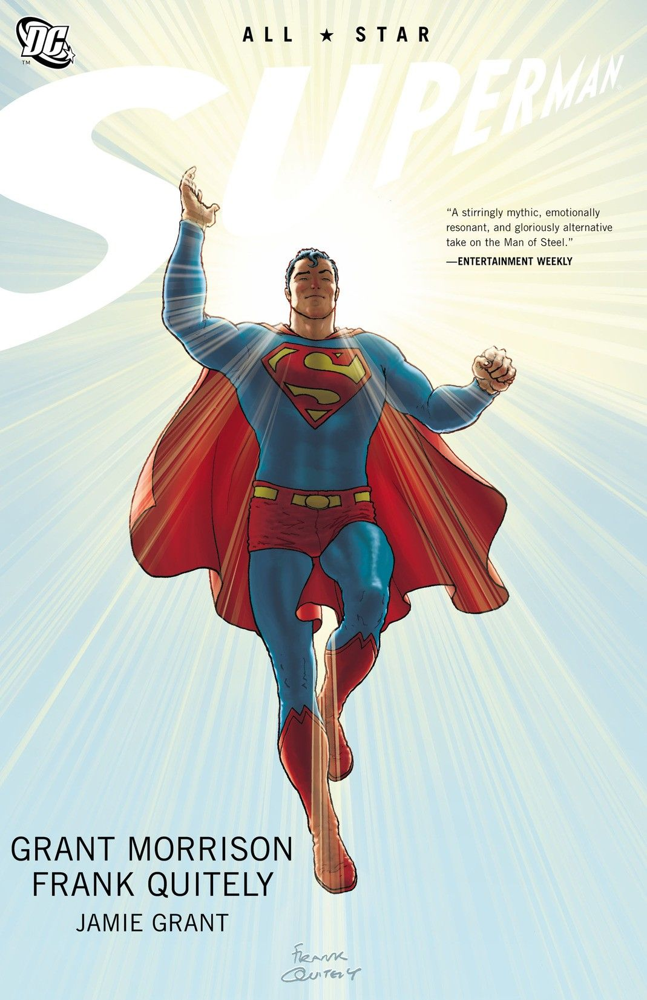

Graduated in Law at Universidade de São Paulo, Master in IR at San Tiago Dantas, currently at Le Wagon bootcamp. Hardcore fan of comics & other geek stuff (except videogames, sorry!). Husband of a awesome (but stubborn) wife and father of one bright (and also stubborn) girl.
|  |
A Contract with God (1978)A Contract with God and Other Tenement Stories is a graphic novel by American cartoonist Will Eisner published in 1978. The book's short story cycle revolves around poor Jewish characters who live in a tenement in New York City. Eisner produced two sequels set in the same tenement: A Life Force in 1988, and Dropsie Avenue in 1995. Though the term "graphic novel" did not originate with Eisner, the book is credited with popularizing its use. |
|  |
Akira (1982)Akira is a Japanese manga series written and illustrated by Katsuhiro Otomo. Set in a post-apocalyptic and futuristic Neo-Tokyo, the manga focuses on the efforts of a teenaged biker gang leader Kaneda, political activist Kei, a trio of Espers, and Neo-Tokyo's military leader Colonel Shikishima to prevent Tetsuo, Kaneda's mentally-fractured childhood friend, from using his unstable telekinetic abilities to ravage the city and awaken a mysterious individual with similar psychic abilities named "Akira". It is considered a landmark work in the cyberpunk genre. |
|  |
All-Star Superman (2005)All-Star Superman is a twelve-issue American comic book series featuring Superman that was published by DC Comics. The series ran from November 2005 to October 2008. The series was written by Grant Morrison, drawn by Frank Quitely, and digitally inked by Jamie Grant. DC claimed that this series would "strip down the Man of Steel to his timeless, essential elements". |